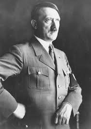
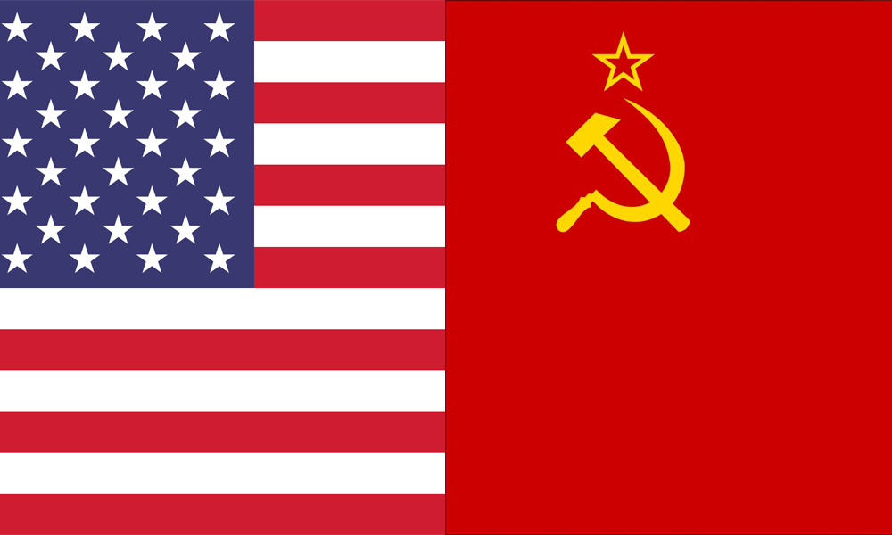
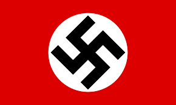
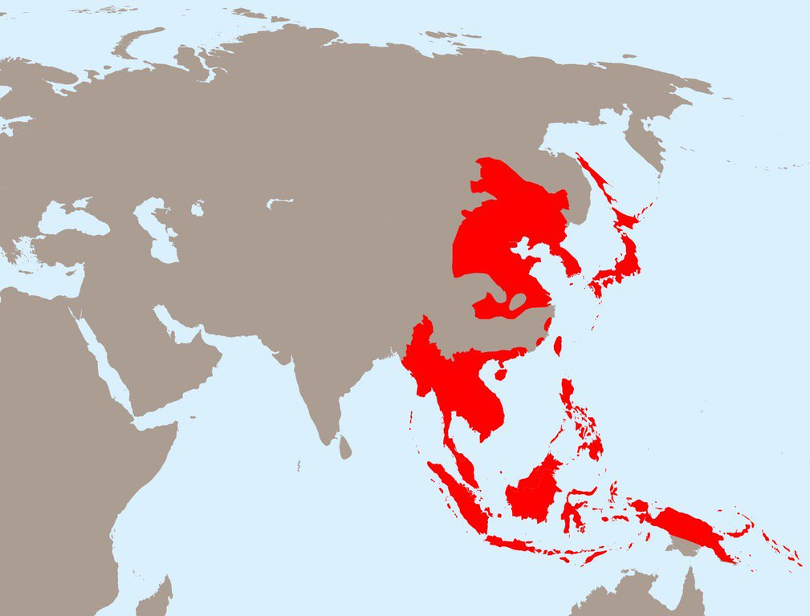

Segunda Guerra Mundial
Como Tudo Começou ??
O inicio da GuerraA Segunda Guerra Mundial teve seu inicio entre 1939 a 1945,Uma das grandes influencias de ter ocorrido essa grande guerra foi o tratado de versalhes pois incluíam a perda de uma parte de seu território para um número de nações fronteiriças, de todas as colônias sobre os oceanos e sobre o continente africano, e foi proibido de ter um exército com mais de 100 mil homems e uma indenização bilionaria de 6,6 bilhôes de libras sendo assim acabando com a economia do pais
É um sobrevivente da Era do Gelo, originário do Pleistoceno Superior, cerca de 300 mil anos atrás.[2] O sequenciamento de DNA e estudos.
A Grande Depressão
Democracia e Totalitarismo
A grande depressão foi a maior crise economica da historia em 1929 a bolsa de valores quebrou e isso destruiu a economia do mundo capitalista, depois da premeira guerra Mundial os Estados Unidos virou um grande potencia ou seja outros paises dependiam da economia dos Estados Unidos e quando quebrou levou outros paises para o buraco, sendo assim a economia da Europa se lascou.
Após a grande depressão duas correntes ideologicas se espalharam pela Europa,sendo Democracia, paises como EUA,Inglaterra e frança acreditavam num sistema de governo que preservar-se a riquesa de cada pessoa seria sempre o melhor caminho a segunda era o Totalitarismo que prega que um pais precisa de um lider supremo que concentre todo seu poder e diz tudo o que o povo tem que fazer ou seja a liberdade era secrificada em nome da nação .
Estamos falando de Ditaduras então vamos falar da União Soviética Quando estourou Revolução que acabou com o imperio Russo em 1917 Começou uma guerra civil enorme e em 1922 foi criado a União das Repúblicas Socialistas Soviéticas que é considerado o primeiro pais comunista, e quem assumiu no seculo XX foi Josef Stalin trazando socialismo de esquerda
-

Na Alemanha aconteceu algo parecido Depois da primeira guerra Alemanha deixou de ser um imperio e virou uma República,e como esse novo governo era os mesmos que assinaram a rendiação da primeira guerra o povo ainda esta furioso por ter perdido a guerra eles não queria saber de República e ao pouco o partido Nazista começou a ganhar força com o povo e em 1933 lider do partido Adolf Hitter se tornou chanceler da Alemanha e em 1934 Presidente alemão morreu e o Hitter se tornou fuhrer o lider absuluto do pais
Então o mundo estava dividido novamente você tinha paises democratas que não concordavam com os paises totalitaritas de direita e por sua vez detestavam os paises totalitaritas de esquerda e por sua vez detestavam os pais democratas capitalistas.

O Imperio japones estava se expandindo dês da segunda metade do seculo XIX e esse imperio estava se expandindo pelo pacífico, então assim como a primeira guerra Mundial nos tinha um novo barril de polvora preste a explodir e para saber como foi explodir e só olhar para Alemanha.
-

O Hitler chegou ao poder com dois discurso importante o primeiro era sobre um lance racista que pregava superabilidade da raça ariana e o segundo era renegar o tratado de versalhes já que só prejudicava Alemanha,e como Hitler queria tornar Alemanha maior potencia do mundo para ele subir a sua economia ele começou a investir em industrias na área militar,ignorando o tratado de versalhes aos poucos, em 1936 Hitler publicamente rejeitou o tratado de versalhes a frança e a Inglaterra não gostaram nada disso,porém não fizeram nada.
Agora a economia da Alemanha estava crecendo e um exército cada vez maior o que estava faltando ?? territorios ou nas palavras do Hitler "Espaço vital"